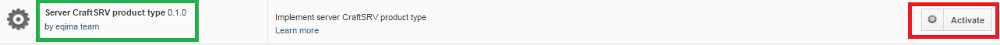
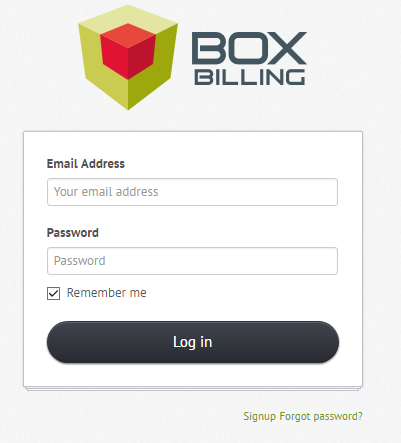
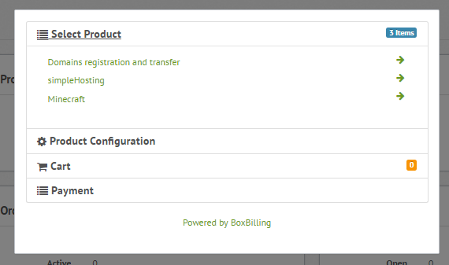
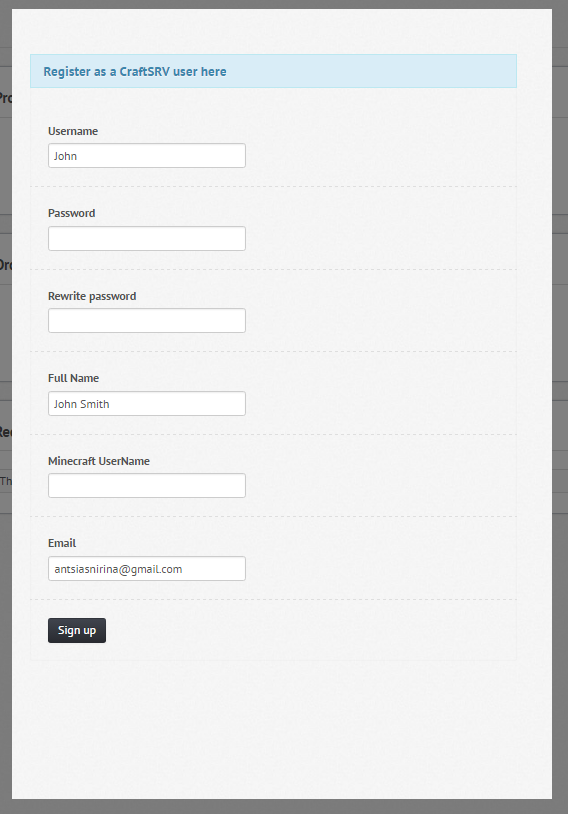
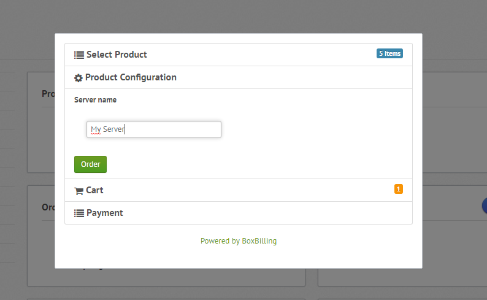
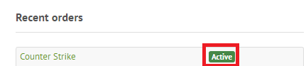

ServiceCraftSVR¶
Installation des produits serveurs¶
Pour cela, il suffit d’aller dans Extensions -> Overview, comme précédemnt lors de l’installation d’un serveur machine, mais cette fois-ci on active le serveur Server CraftSRV product type 0.1.0 en cliquant sur Activate.
Ajout des produits serveurs de types GameCraftSRV¶
Il faut se rendre dans Products -> Products & Services (encadré et souligné en vert) puis cliquer l’onglet New Product (encadré en rouge).
Et là, il y a trois propriétés à spécifier (encadré en rouge) :
- Une liste déroulante permettant de choisir le type du produit,
- idem pour sa catégorie
- enfin, un champ pour le nom du produit.
Il ne reste plus qu’à valider en appuyant sur le bouton CREATE, puis vous serrez face à une interface permettant de paramétrer d’une manière générale le produit et quelques configurations comme :
- Le choix du serveur machine
- Le choix du game
- Et le Hosting Plan
Front office¶
Authentification en tant que client¶
Pour s’authentifier en tant que client, il va falloir se rendre à cet url : http://197.158.86.184:8080/boxbilling/index.php?_url=/login.
Entrez l’adresse éléctronique et le mot de passe en tant que client et cliquez sur Log in.
Maintenant, vous pouvez commander des produits configurations serveurs de type gameCraftSRV !
Achats des produits de type gameCraftSRV¶
Pour ce faire, cliquer sur le bouton New Order. Vous verez après les listes des différents produits configurations serveurs de type GameCraft.
Selectionner un produit de type gameCraftSRV ! Mais 2 cas peuvent se présenter si vous avez déjà un compte CraftSRV ou pas.
Evidemment, il va falloire en créer un. Pour cela, cliquer sur le lien Register as a CraftSRV user.
Vous serez face à cet formulaire :
Remplissez tous ces informations et faites Sing up et le compte sera créer! Vous pouvez ensuite passer au payement.
Dans ce cas, lors d’un séléction d’un produit de type GameCraft pour le commander vous devrez indiquer le nom du serveur (Server name en anglais) commme suit :
Ensuite, cliquer sur Order, puis checkout enfin vous faites le payement.
Que vous avez déjà un compte ou pas, si tout se déroule très bien comme il faut vous devrez avoir un Active en vert à côté de votre produit de type GameCraft(cela signifie autrement que vous l’avez bien payé !!) comme sur la figure suivante.
